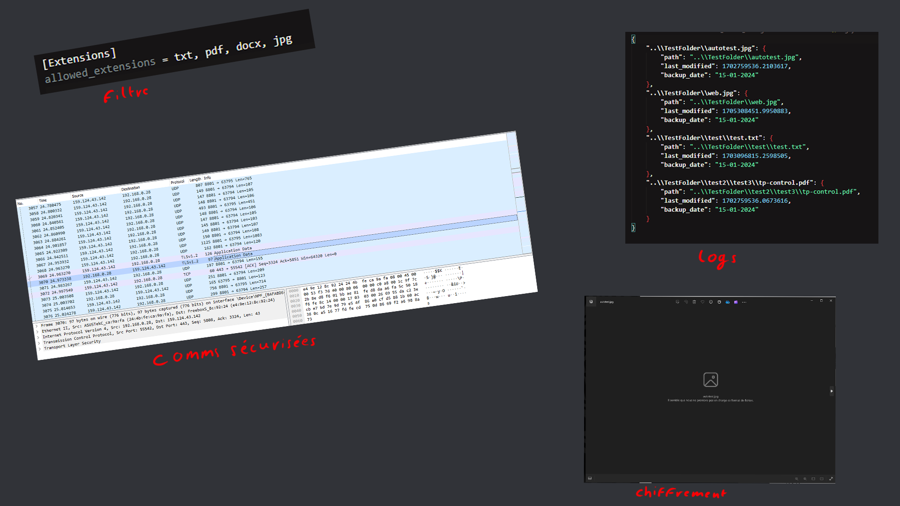
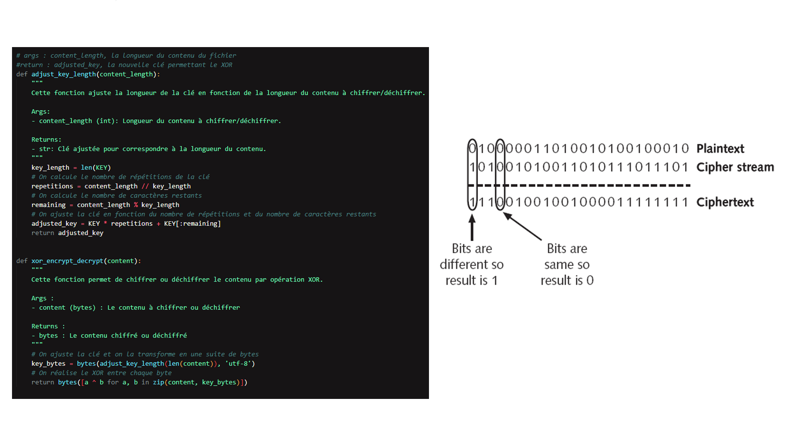
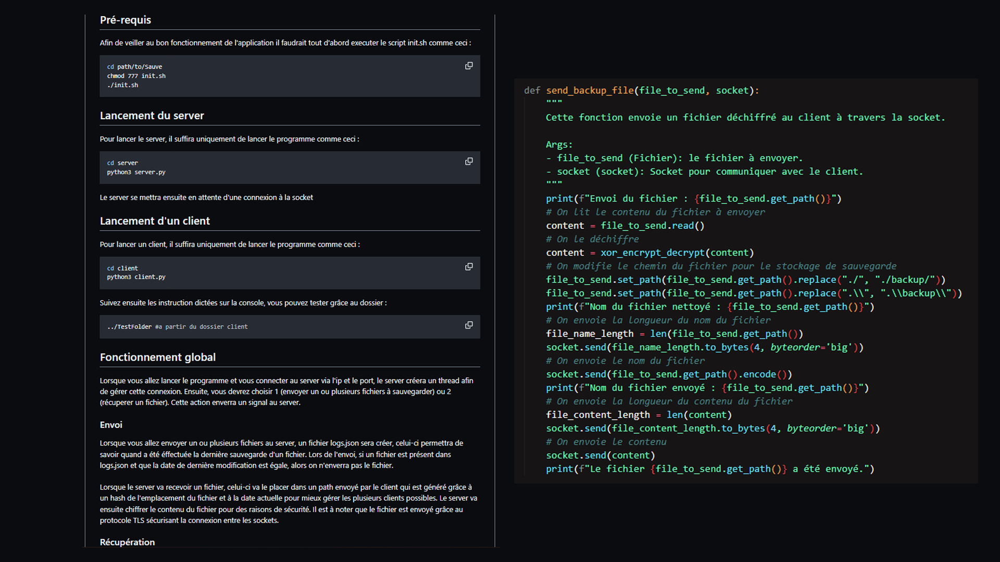
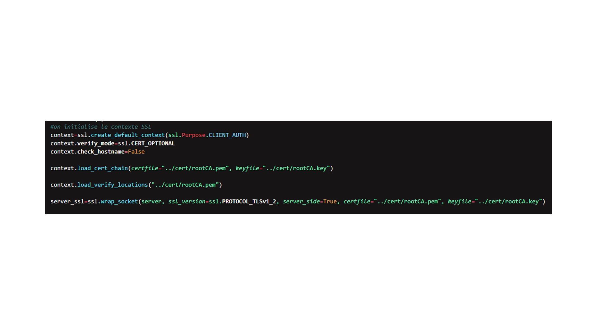
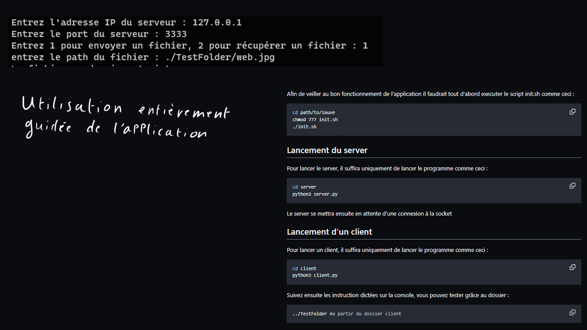
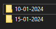
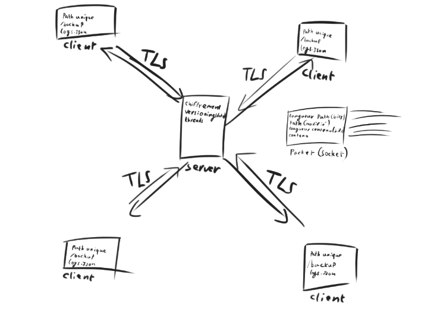

Description :
Le projet consistait à créer une application client-server qui permet de sauvegarder des fichiers selon le choix de l'utilisateur
Composantes essentielles :
CE 1.01 | En respectant les besoins décrits par le client | Niveau nécessaire estimé : Expertise
Les besoins du client étaient :
"Il s'agit d'une application client-serveur en réseau, qui doit satisfaire aux règles suivantes :
- L'utilisateur choisi le nom du dossier à partir duquel il veut faire la sauvegarde, il entre l'adresse IP du
serveur et la sauvegarde démarre.
- L'application cliente ne sauvegarde pas tous les fichiers du dossier, mais seulement ceux dont les propriétés
(suffixes) sont décrites dans un fichier de paramètres, prédéfini.
- L'application, sauvegarde toute l'arborescence depuis le nom de dossier indiqué.
- L'application doit être en mesure de détecter si une première sauvegarde a déjà été faite :
o Si non, tous les fichiers correspondants aux critères seront envoyés au serveur
o Si oui, on ne copie que les fichiers qui n'ont pas été sauvegardés ou qui ont été modifiés depuis la
dernière sauvegarde.
En option :
- Les flux de données transmis devront être sécurisés.
- Les données sauvegardées coté serveur devront être chiffrées."

Les attentes du client ont entièrement été respectées. Chaque demande à été implémentés y compris les options.
CE 1.03 | En appliquant les principes algorithmiques | Niveau nécessaire estimé : Maitrise
Afin de chiffrer les données, on à utilisé un algorithme XOR assez simple car selon le client : "pas besoin de faire un algorithme très puissant je n'en ait pas besoin". L'envoi de fichiers est fragmentée afin de réaliser l'application la plus optimisée possible.

CE 1.04 | En veillant à la qualité du code et à sa doccumentation | Niveau nécessaire estimé : Expertise
Chaque partie du code à été commentée et optimisée afin d'avoir le meilleur résultat possible. Un fichier readme à été fait afin de faciliter l'utilisation de l'application par le client.

CE 1.06 | En choisissant les ressources techniques appropriés | Niveau nécessaire estimé : Maitrise
En créant une application sécurisée il faut choisir des ressources techniques adaptées comme des socket SSL afin de protéger les communications par exemple.

CE 3.01 | En sécurisant le système d'information | Niveau nécessaire estimé : Maitrise
La sauvegarde est une part très importante dans la sécurité d'un système d'information, il est donc tout naturel que créer une application de sauvegarde sécurisée fasse partie de cette CE.
CE 3.02 | En appliquant les normes en vigeur et les bonnes pratiques architecturales et de sécurité | Niveau nécessaire estimé : Maitrise
Afin de faire une application de sauvegarde sécurisée il est important d'utiliser des protocoles de sécurité pour les envois de fichier au minimum (TLS en l'occurence).
CE 3.03 | En offrant une qualité de service optimale | Niveau nécessaire estimé : Expertise
L'application à été pensée pour être la plus optimisée et simple d'utilisation possible dans le temps donné.

CE 3.04 | En assurant la continuité d'activité | Niveau nécessaire estimé : Maitrise
L'application crée plusieurs versions d'un fichier si celui-ci à été modifié à une autre date que celle enregistrée permettant de pouvoir récupérer ce dernier avant même que celui-ci ne soit sauvegardé corrompu par exemple.

Apprentissages critiques :
AC 31.01 | Choisir et implémenter des architectures adaptées | Niveau nécessaire estimé : Maitrise
Afin de créer l'application, nous avons dû penser une architecture la mieux adaptée possible.

AC 33.03 | Appliquer une politique de sécurité au niveau de l'infrastructure | Niveau nécessaire estimé : Maitrise
L'application étant une application sécurisée, nous avons inclus toutes les sécurités nécessaires au bon fonctionnement de cette dernière.